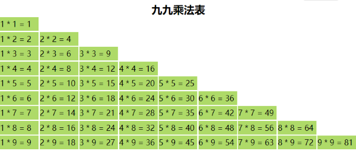

- 可以绑定 内容，也可以绑定 属性
- 在 .wxml 中使用插值表达式 {{}} 和 .js 中的数据绑定起来；测试数据如下
- 简单粗暴 - 想绑哪个值就绑哪个值
- WXML 中的动态数据均来自对应页面 Page 的数据 data
- 更多信息，请访问 数据绑定
绑定内容
<view> {{msg}} </view>
可以进行简单的逻辑运算，如三元表达式、算术运算
<view> {{age + 2}} </view>
<view> {{age>=18 ? 'Welcome' : 'Bye'}} </view>
绑定属性
<image src="{{src}}" mode=""/>
样式 wxss
<view class="{{isActive?'bold':''}}">动态类的三元表达式</view>
<view class="title {{isActive?'bold':'normal'}}">静态类和动态类的组合形式</view>
<text style="color: {{color}};">内联样式</text>
<view class="box" style="background-image: url({{src}});">类和内联样式可以共同使用</view>
编译后，使用调试器的拾取工具，单击模拟器中的元素，可以查看结构对应的样式
 编译后查看结构
编译后查看结构
[] 错误语法示例
<view class="{{'bold':isActive}}">错误！简洁起见，小程序不支持对象形式</view>
<text style="backgroundColor: {{color}};">居然不支持驼峰语法</text>
- 以绑定属性的方式使用 wx:if 判断条件是否成立，成立则渲染，否则不渲染或不处理
- 更多信息，请访问
条件渲染 wx:if
- 测试数据如下：
data: {
age: 18,
isShow: true
}
单分支判断
<view wx:if = '{{ age >= 18 }}'> Welcome </view>
单分支判断还可以使用 hidden 属性实现条件渲染；为 true 时，隐藏；为 false 时，显示
<view hidden="{{age >= 18}}">88</view>
<view hidden="{{isShow}}">88</view>
双分支判断
<view wx:if = '{{ age >= 18 }}'> Welcome </view>
<view wx:else> Bye </view>
多分支判断
- wx:if wx:elif wx:else
- 可读性不好，不建议使用
凡是用到布尔变量的地方，都可以使用比较表达式
wx:if 是通过加载或移除组件的方式实现条件渲染；真，加载组件；假，移除组件；有没有的问题
hidden 是通过 display 是否为 none 实现条件渲染；组件始终加载；显示不显示的问题
复杂的逻辑切换，使用 wx:if；频繁切换状态，使用 hidden
使用调试器的 appData 面板实时调试
有时候使用 wx:show 并不能真正控制，请检查样式是否有冲突或者直接使用 wx:if - 购物车 footer
数组列表渲染
obj:[
{id:0, name:'gl', year:1995},
{id:1, name:'sh', year:2005},
{id:2, name:'nj', year:2008}
],
arr: [1, 2, 3, 4, 5]
数字 - 循环9次，多用于测试；使用 index 作为 key
<view wx:for="{{9}}" wx:key="index"> {{item}} </view>
简单数组 - 循环5次；使用 item 作为 key
<view wx:for="{{obj}}" wx:key="item"> {{item.name}}- {{item.year}} </view>
对象数组 - 循环3次
<view wx:for="{{arr}}" wx:key="id"> {{item}} </view>
[] 多重循环 - 9*9乘法表
- 样式自定
- 为了更加直观的观察效果，配置页面 pageOrientation 为横板 landscape
<view class="item" wx:for="{{arr}}" wx:key="index" wx:for-item='i'>
<text wx:for="{{i+1}}" wx:key="index" wx:for-item='j'>
<text class="item" wx:if="{{j>0}}">{{j}} * {{i}} = {{i*j}} </text>
</text>
</view>

9*9 乘法表
对象列表渲染
- index 相当于 key；item 相当于 value - 也可以自定义为 key-value 形式
obj:{id:100,name:'glpla',gender:'male'}
<block wx:for="{{obj}}" wx:key="index">
<view>{{index}}</view>
<view>{{item}}</view>
</block>
可以使用无语义化的模板标签 <block>作为容器，用来分隔多层逻辑或控制一组组件的渲染